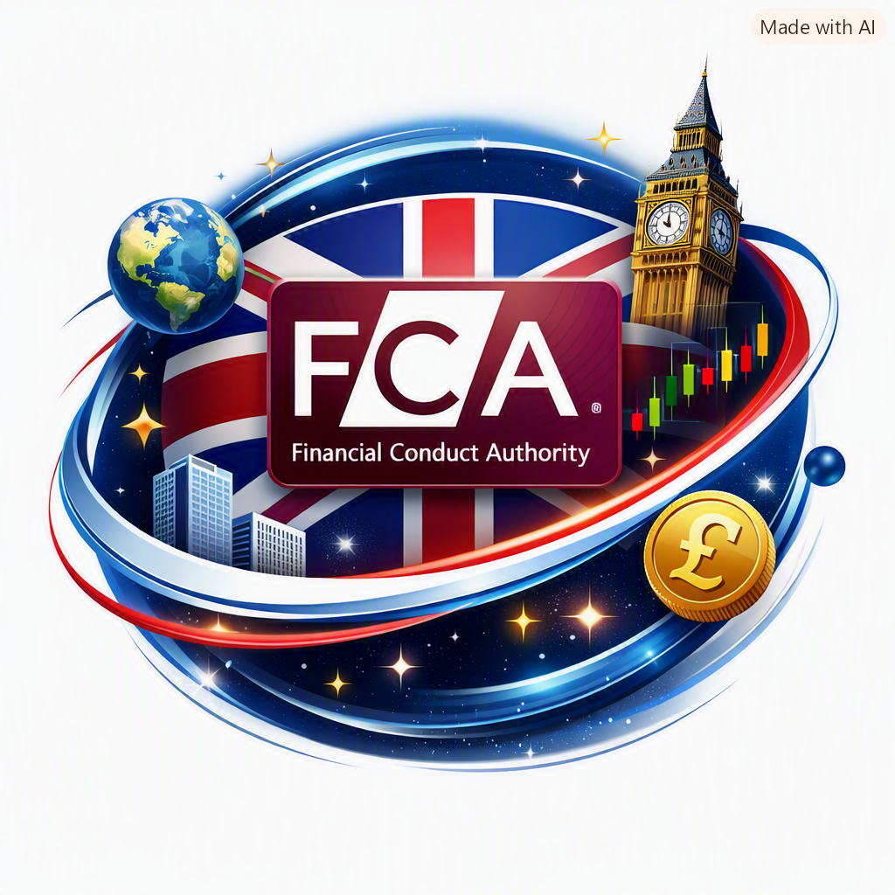

Orbital page United Kingdom · FCA
Protection level: Altissimo
- Financial authority
- Financial Conduct Authority (FCA)
- Abbreviation
- FCA
- Official homepage
- https://www.fca.org.uk/
- Scam reporting
- https://www.fca.org.uk/consumers/report-scam
- Institutional email
- consumer.queries@fca.org.uk
Orbital note
This orbital page collects official UK supervision, warning-list, register and enforcement resources so that users can verify firms, report scams and cross-check prudential oversight from primary institutional sources.
📨 Report a scam to the FCA
🔎 Search the Financial Services Register
⚠️ Check the FCA Warning List
✅ Open ScamSmart guidance